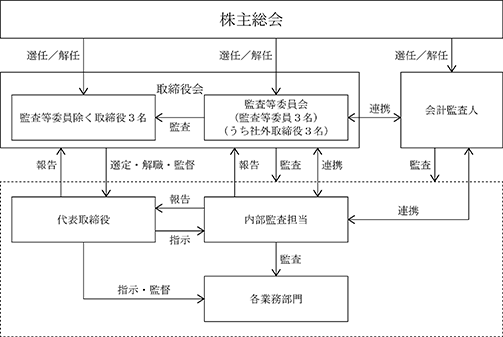

(注) 「提出日現在発行数」欄には、2024年４月１日からこの有価証券報告書提出日までの新株予約権(ストックオプション)の行使により発行された株式数は含まれておりません。
会社法に基づき発行した新株予約権は、次のとおりであります。
※ 当事業年度の末日(2024年１月31日)における内容を記載しております。提出日の前月末現在(2024年３月31日)において記載すべき内容は、当事業年度の末日における内容から変更がないため、提出日の前月末現在に関する記載を省略しております。
(注) １．2017年４月18日開催の取締役会決議により、2017年５月８日付で普通株式１株につき50株の株式分割を行っております。これにより「新株予約権の目的となる株式の数」、「新株予約権の行使時の払込金額」及び「新株予約権の行使により株式を発行する場合の株式の発行価格及び資本組入額」が調整されております。
２．新株予約権１個につき目的となる株式数は、50株であります。
ただし、新株予約権の割当日後、当社が株式分割、株式併合を行う場合は、次の算式により付与株式数を調整、調整の結果生じる１株未満の端数は、これを切り捨てます。
３．新株予約権の割当日後、当社が株式分割、株式併合を行う場合は、次の算式により払込金額を調整し、調整により生ずる１円未満の端数は切り上げます。
また、新株予約権の割当日後に時価を下回る価額で新株式の発行又は自己株式の処分を行う場合は、次の算式により払込金額を調整し、調整により生ずる１円未満の端数は切り上げます。
上記算式において、「既発行株式数」とは当社の発行済株式数から当社が保有する自己株式数を控除した数とします。
さらに、当社が他社と吸収合併若しくは新設分割を行い、新株予約権が継承される場合、又は当社が新設合併若しくは吸収分割を行う場合等、払込金額の調整を必要とする場合には、当社は必要と認める行使価額の調整を行うことができます。
４．当社は、当社株主総会及び取締役会決議において定めるところに従い、当社を消滅会社とする合併、当社を分割会社とする吸収分割、新設分割、株式交換又は株式移転を行う場合において、それぞれ合併契約等の規則に従い、本新株予約権の新株予約権者に対して、それぞれ合併後存続する株式会社等の新株予約権を交付することができます。
５．会社が新株予約権を取得することができる事由及び取得の条件
① 当社が消滅会社となる合併契約書承認の議案、当社が完全子会社となる株式交換契約書承認の議案又は株式移転の議案について株主総会の承認決議がなされたときは、当社は新株予約権を無償で取得することができる。
② 新株予約権が「新株予約権の行使の条件(払込金額及び行使期間を除く)」に該当しなくなった場合は、当社は当該新株予約権を無償で取得することができる。
※ 当事業年度の末日(2024年１月31日)における内容を記載しております。提出日の前月末現在(2024年３月31日)において記載すべき内容は、当事業年度の末日における内容から変更がないため、提出日の前月末現在に関する記載を省略しております。
(注) １．2017年４月18日開催の取締役会決議により、2017年５月８日付で普通株式１株につき50株の株式分割を行っております。これにより「新株予約権の目的となる株式の数」、「新株予約権の行使時の払込金額」及び「新株予約権の行使により株式を発行する場合の株式の発行価格及び資本組入額」が調整されております。
２．新株予約権１個につき目的となる株式数は、50株であります。
ただし、新株予約権の割当日後、当社が株式分割、株式併合を行う場合は、次の算式により付与株式数を調整、調整の結果生じる１株未満の端数は、これを切り捨てます。
３．新株予約権の割当日後、当社が株式分割、株式併合を行う場合は、次の算式により払込金額を調整し、調整により生ずる１円未満の端数は切り上げます。
また、新株予約権の割当日後に時価を下回る価額で新株式の発行又は自己株式の処分を行う場合は、次の算式により払込金額を調整し、調整により生ずる１円未満の端数は切り上げます。
上記算式において、「既発行株式数」とは当社の発行済株式数から当社が保有する自己株式数を控除した数とします。
さらに、当社が他社と吸収合併若しくは新設分割を行い、新株予約権が継承される場合、又は当社が新設合併若しくは吸収分割を行う場合等、払込金額の調整を必要とする場合には、当社は必要と認める行使価額の調整を行うことができます。
４．当社は、当社株主総会及び取締役会決議において定めるところに従い、当社を消滅会社とする合併、当社を分割会社とする吸収分割、新設分割、株式交換又は株式移転を行う場合において、それぞれ合併契約等の規則に従い、本新株予約権の新株予約権者に対して、それぞれ合併後存続する株式会社等の新株予約権を交付することができます。
５．会社が新株予約権を取得することができる事由及び取得の条件
① 当社が消滅会社となる合併契約書承認の議案、当社が完全子会社となる株式交換契約書承認の議案又は株式移転の議案について株主総会の承認決議がなされたときは、当社は新株予約権を無償で取得することができる。
② 新株予約権が「新株予約権の行使の条件(払込金額及び行使期間を除く)」に該当しなくなった場合は、当社は当該新株予約権を無償で取得することができる。
※ 当事業年度の末日(2024年１月31日)における内容を記載しております。提出日の前月末現在(2024年３月31日)において記載すべき内容は、当事業年度の末日における内容から変更がないため、提出日の前月末現在に関する記載を省略しております。
(注) １．新株予約権１個につき目的となる株式数は、100株であります。
ただし、新株予約権の割当日後、当社が株式分割、株式併合を行う場合は、次の算式により付与株式数を調整、調整の結果生じる１株未満の端数は、これを切り捨てます。
２．新株予約権の割当日後、当社が株式分割、株式併合を行う場合は、次の算式により払込金額を調整し、調整により生ずる１円未満の端数は切り上げます。
また、新株予約権の割当日後に時価を下回る価額で新株式の発行又は自己株式の処分を行う場合は、次の算式により払込金額を調整し、調整により生ずる１円未満の端数は切り上げます。
上記算式において、「既発行株式数」とは当社の発行済株式数から当社が保有する自己株式数を控除した数とします。
さらに、当社が他社と吸収合併若しくは新設分割を行い、新株予約権が継承される場合、又は当社が新設合併若しくは吸収分割を行う場合等、払込金額の調整を必要とする場合には、当社は必要と認める行使価額の調整を行うことができます。
３．① 2024年１月期から2028年１月期までのいずれかの期において、有価証券報告書に記載される監査済みの損益計算書(連結損益計算書を作成している場合には連結損益計算書)の売上高が、1,000百万円を超過した場合にのみ、これ以降本新株予約権を行使することができる。
なお、売上高の判定に際しては、適用される会計基準の変更や当社の業績に多大な影響を及ぼす企業買収等の事象が発生し当社の損益計算書(連結損益計算書を作成している場合には連結損益計算書)に記載された実績数値で判定を行うことが適切ではないと取締役会が判断した場合には、当社は合理的な範囲内で当該企業買収等の影響を排除し、判定に使用する実績数値の調整を行うことができるものとする。
② 新株予約権者は、新株予約権の権利行使時において、当社または当社関係会社の取締役、監査役または従業員であることを要する。ただし、任期満了による退任、定年退職、その他正当な理由があると取締役会が認めた場合は、この限りではない。
③ 新株予約権者の相続人による本新株予約権の行使は認めない。
④ 本新株予約権の行使によって、当社の発行済株式総数が当該時点における発行可能株式総数を超過することとなるときは、当該本新株予約権の行使を行うことはできない。
⑤ 各本新株予約権１個未満の行使を行うことはできない。
４．当社が消滅会社となる合併契約、当社が分割会社となる会社分割についての分割契約もしくは分割計画、または当社が完全子会社となる株式交換契約、株式交付計画もしくは株式移転計画について株主総会の承認(株主総会の承認を要しない場合には取締役会決議)がなされた場合は、当社は、当社取締役会が別途定める日の到来をもって、本新株予約権の全部を無償で取得することができる。
該当事項はありません。
③ 【その他の新株予約権等の状況】
会社法に基づき発行した新株予約権及び無担保転換社債型新株予約権付社債は、次のとおりであります。
※ 当事業年度の末日(2024年１月31日)における内容を記載しております。提出日の前月末現在(2024年３月31日)において記載すべき内容は、当事業年度の末日における内容から変更がないため、提出日の前月末現在に関する記載を省略しております。
(注) １．新株予約権１個当たりの目的となる株式の数は100株とする。
２．新株予約権の発行後、交付株式数が調整される場合には、本新株予約権の目的となる株式の総数も下記(注)３記載の調整後交付株式数に応じて調整されるものとする。
３．(1) 当初行使価額
当初行使価額は、296円とする。
(2) 行使価額の調整
本新株予約権の発行後、当社の発行済普通株式数に変更を生じる場合又は変更を生ずる可能性がある場合は、次に定める算式をもって行使価額を調整する。
行使価額の調整を行う場合には、次に定める算式をもって交付株式数を調整する。但し、調整の結果生じる１株未満の端数は切り捨てるものとする。
４．本新株予約権の行使により株式を発行する場合において増加する資本金の額は、会社計算規則第17条の規定に従い算出される資本金等増加限度額の２分の１の金額とし、計算の結果１円未満の端数が生じる場合はその端数を切り上げた金額とする。また、本新株予約権の行使により株式を発行する場合において増加する資本準備金の額は、当該資本金等増加限度額から増加する資本金の額を減じた額とする。
該当事項はありません。
(注) １．新株予約権の権利行使による増加であります。
２．当社の連結子会社であった株式会社ピースリーの吸収合併(合併比率１：1,870)に伴う新株発行による増加であります。
３．転換社債型新株予約権付社債の新株予約権の権利行使による増加であります。
４．当社は、2024年３月13日開催の取締役会において、2022年５月２日付「第三者割当による第1回無担保転換社債型新株予約権付社債並びに第11回新株予約権及び第12回新株予約権の募集に関するお知らせ」にて開示いたしました、資金使途及び支出予定時期について、下記のとおり、変更する旨を決議いたしました。
(1)変更の理由
当社は、2022年５月２日付「第三者割当による第1回無担保転換社債型新株予約権付社債並びに第11回新株予約権及び第12回新株予約権の募集に関するお知らせ」において開示のとおり資金調達を行っており、その後最新の開示として2023年３月７日付「資金使途の変更に関するお知らせ」にて資金使途の変更を行っております。
TRaaS 事業における SaaS サービスのマーケット開発資金につきましては、流通小売店舗向け DX 製品「店舗の星」（以下、「店舗の星」）及び AI 電力削減ソリューション「AIrux8」（以下、「AIrux8」）等の SaaSサービスのマーケット拡大に向けて、初年度において58百万円充当し、２年目においては、44百万円を充当いたしました。今後、３年目～６年目の間にかけては、これら店舗の星及び AIrux8等における SaaS月額課金型収益の更なる成長を見込み、114百万円を充当していく予定です。
オウンドメディア「IoT ソリューション Lab」の制作、プロモーション費用につきましては、初年度において５百万円を充当し、２年目においては２百万円を充当いたしました。これらは当初の見込みよりも少ない金額で推移していることから、今後は手元資金を活用する計画とし、初年度から２年目までの充当後の残金41百万円を、TRaaS 事業における SaaS サービスのマーケット開発資金に充当する計画に変更いたします。
人材投資（採用経費、人件費）につきましては、TRaaS事業の事業展開を加速させるため、初年度から２年目にかけて８名の採用を実施し、初年度において３百万円充当し、２年目においては26百万円を充当いたしました。今後、３年目～６年目までの人材投資として、136百万円を充当する予定です。
(2)変更の内容
資金使途の変更内容は次のとおりであります。（変更箇所は下線で示しております。）
（変更前の内容）
（変更後の内容）
2024年１月31日現在
(注) 自己株式111株は、「個人その他」に１単元、「単元未満株式の状況」に11株含まれております。
2024年１月31日現在
2024年１月31日現在
2024年１月31日現在
(注) 上記以外に自己名義所有の単元未満株式11株を保有しております。
該当事項はありません。
該当事項はありません。
該当事項はありません。
(注) 当期間における保有自己株式数には、2024年４月１日からこの有価証券報告書提出日までの単元未満株式の
買取り及び売渡しによる株式数は含まれておりません。
当社は、株主の皆様に対する利益還元を経営の重要課題と認識しており、事業の成長や資本効率の改善等による中長期的な株式価値の向上とともに、今後の業績の推移や財務状況等を考慮した上で将来の事業展開のための内部留保等を総合的に勘案しながら配当を継続的に実施していく方針であります。
当社は、期末配当として年１回、剰余金の配当を行うことを基本方針としております。この剰余金の配当の決定機関は株主総会であります。
今後は、内部留保を確保しつつ、財政状態及び経営成績並びに経営全般を総合的に判断して利益配当を行っていく方針であります。しかしながら、現時点においては普通配当の実施の可能性及び実施時期については未定であります。
引き続き株主の皆様に対する利益還元を経営の重要課題と認識しており、事業の成長、資本効率の改善等による中長期的な株式価値の向上とともに業績を勘案した配当を継続的に実施していきたいと考えております。
なお、内部留保資金につきましては、財務体質の強化と積極的な事業展開のための備えとしていくことといたします。
また、会社法第454条第５項の規定に基づき、取締役会の決議により、毎年７月31日を基準日として中間配当を実施することができる旨を定款に定めております。
当社は、株主、取引先、従業員等のステークホルダーの期待と信頼にこたえ企業価値を向上させるためには、コーポレート・ガバナンスの構築が必要不可欠であり、経営の健全性・効率性及び透明性を確保すべく、最適な経営管理体制の構築に努めていくことを、「基本的な考え方」としております。
なお、以下のコーポレート・ガバナンスの状況については、本書提出日現在の状況を記載しております。
当社は会社法に基づく機関として、株主総会及び取締役の他、取締役会、監査等委員会、会計監査人を設置するとともに、内部監査担当部門として内部監査室を設置しております。そして監査等委員である取締役については、独立性の高い社外取締役(監査等委員である取締役３名のうち、全員が社外取締役)を登用しております。
このような社外取締役による経営への牽制機能の強化や、上記機関相互の連携により、経営の健全性・効率性及び透明性が十分に確保できるものと認識しているため、現状の企業統治体制を採用しております。
当社の取締役会は、取締役(監査等委員である取締役を除く)３名及び監査等委員である取締役３名の合計６名(本書提出日現在)で構成されており、法令又は定款の定めるところにより取締役等に委任できない事項及び経営戦略等の重要事項について審議・決定し、それらについて定期的にチェックする機能を果たしております。
原則として月１回の開催とし、必要に応じて臨時取締役会を開催しております。
当社の取締役会の構成員については、以下のとおりであります。
議長：藤吉英彦(代表取締役社長)
構成員：青栁貴士(取締役CFO)、鈴江泰仁(取締役)、岡安俊英(独立社外取締役・監査当委員)、佐々木豊(独立社外取締役・監査等委員)、原口昌之(独立社外取締役・監査等委員)
当社の監査等委員会は、社外取締役である監査等委員３名で構成されております。監査等委員会は、内部統制システムを利用し、取締役及び執行役員等の職務執行の状況について監査、監督を実施します。また、監査等委員会は、会計監査人及び内部監査室と連携することで、監査の実効性を高めております。
監査等委員である取締役は、取締役の執行状況等を監査・監督するための経営監視機能の充実に努めており、内部監査室及び会計監査人との相互の意見交換等を通じて、その実効性を高めるよう努めております。
当社の監査等委員会の構成員については、以下のとおりであります。
委員長：岡安俊英(独立社外取締役・監査等委員)、佐々木豊(独立社外取締役・監査等委員)、原口昌之(独立社外取締役・監査等委員)
当社の内部監査室は、代表取締役の命を受けた内部監査担当者１名で構成されております。業務上の不正、誤謬の未然防止、経営効率の増進に資することを目的として、内部監査室を設置しており、当社の各部門に定期的な内部監査等を実施しております。また、監査の結果、改善を必要とする場合には各部門に改善措置を取るように通知し、各部門で業務改善報告書を作成し内部監査ではそれに基づいてフォローアップ監査を行っております。これらにより、業務の適正化・リスク把握に努めております。
また、内部監査室と監査等委員である取締役は、監査計画や監査実施状況及び監査結果等について報告を行い、定例会議以外でも、課題やリスク及び改善等の状況について相互に綿密な連携を図り、管理体制と現場への浸透度の状況把握に努めております。また、内部監査室と監査等委員である取締役は、会計監査人であるそうせい監査法人とも定期的に意見交換を実施しており、監査計画や監査実施状況及び財務報告に係る内部統制の監査を含む監査結果等について、三者の異なる立場からの監査を有機的に連携させることにより、当社業務の適正確保に努めております。
当社は、そうせい監査法人と監査契約を締結しております。
当社におけるコーポレート・ガバナンスの体制(本書提出日現在)は次の図のとおりであります。

当社は、コンプライアンスを前提とした企業活動を通じて、経済社会の発展に貢献することで各ステークホルダーをはじめ、社会から信頼される企業となり、透明性・公正性・効率性を兼ね備えた企業経営を実現することをコーポレート・ガバナンスの重要な目的としています。
上記の目的の確実な達成を目指し、市場環境・経済動向・関連法令の改正その他の事業環境等当社を取り巻くあらゆる状況を踏まえて、次のとおり内部統制システムの構築に関する基本方針を定めております。
なお、取締役会は、本基本方針を事業環境の変化等に応じて適宜見直すこととし、実効性の維持向上を図るべく不断の努力を行うこととしております。その概要は以下のとおりであります。
イ．取締役、使用人の職務の執行が法令及び定款に適合することを確保するための体制
コンプライアンス体制の構築・維持については、監査等委員である取締役による取締役の業務執行の監視に加え、代表取締役の命を受けた内部監査担当者が、内部監査規程に基づき、取締役及び使用人の職務の執行に関する状況の把握、監視等を定期的に行い、代表取締役に報告しております。
また、法令や社内規程上疑義のある行為等について、その情報を直接受領する内部通報制度を整備・運用しております。
ロ．取締役の職務の執行に係る情報の保存及び管理に関する体制
取締役の職務執行に係る情報の保存及び管理については、経営管理部を管掌する取締役又は執行役員を担当役員とし、職務執行に係る情報を適切に文書又は電磁的情報により記録し、文書管理規程に定められた期間保存・管理を行うものとしております。なお、取締役は、これらの文書等を常時閲覧できるものとし、担当役員はその要請に速やかに対応するものとしております。
ハ．損失の危険の管理に関する規程その他の体制
当社は、取締役会がリスク管理体制を構築する責任と権限を有し、これに従いリスク管理に係るコンプライアンス規程及び危機管理規程を制定及び改定し、潜在的リスクの早期発見及び不正行為に対する迅速かつ適切な措置を講ずる体制の構築を進めております。不測の事態が生じた場合には、代表取締役を委員長とする対策委員会を設置して、開示を含む迅速な対応を行い、損害の拡大を防止する体制を整えております。
ニ．取締役の職務の執行が効率的に行われることを確保するための体制
取締役会は、全社的な事業計画を定めるものとし、各取締役及び執行役員は、計画達成に向けて各部門が実施すべき具体的な数値目標及びアクションプランを定めるものとしております。これらの計画の達成に向けて予算管理を月次で行うほか、計画の進捗評価に用いる主要な指標については、月に１回、代表取締役、常勤取締役、執行役員及び各業務部門の責任者が出席し、各業務部門の業務報告や課題等の認識合わせ並びに意見交換の場として開催される経営会議において情報共有されております。また、稟議・決裁等のプロセスが明確化されているため、すべての業務レベルにおいて決定が迅速かつ適正に行われております。このような機関ないし会議体の機能と業務プロセスにおける位置付けに関しては、全役員及び社員の間で共通に認識されているため、計画の策定と推進、その進捗の評価が適正に行われる体制が整っております。
ホ．業務の適正を確保するための体制
当社では、取締役会が、当社の経営計画を決議し、経営管理部はその進捗状況を毎月取締役会に報告するとともに、内部監査室が、当社の内部監査を実施し、その結果を代表取締役に報告することを内部監査計画として策定しております。
ヘ．監査等委員会がその職務を補助すべき使用人を置くことを求めた場合における当該使用人に関する事項
内部監査担当者が協力するとともに、監査業務に必要な補助すべき特定の従業員として、監査等委員会付を置きます。監査等委員会付は原則１名以上配します。
監査等委員会付の独立性を確保するため、当該従業員の任命、異動等人事権に係わる事項の決定には監査等委員会の事前の同意を得て行います。また、監査等委員会付の人事考課については監査等委員の同意を得て行います。
ト．取締役(監査等委員である取締役を除く)及び使用人が監査等委員に報告するための体制その他監査等委員会への報告に関する体制
監査等委員でない取締役及び使用人は、重大な法令違反及び著しい損害を及ぼす恐れのある事実を知ったとき等は、遅滞なく監査等委員会に報告するものとします。
監査等委員及び監査等委員会は必要に応じていつでも取締役に対し報告を求めることができるものとします。監査等委員会へ報告した者に対し、当該報告をしたことを理由として不利な取扱いを行うことを禁止するとともに、その旨を周知徹底しております。
チ．その他監査等委員会の監査が実効的に行われることを確保するための体制
監査等委員会が重要な意思決定のプロセスや業務の執行状況を効率的かつ効果的に把握できるようにするため、監査等委員はいつでも取締役及び従業員に対して報告を求めることができ、取締役は社内の重要な会議への監査等委員の出席を拒めないものとしております。
また、監査等委員は、内部監査担当者及び会計監査人と緊密に連携し、定期的に情報交換を行うものとし、必要に応じて顧問弁護士との意見交換等を実施するものとしております。
リ．監査等委員の職務の執行(監査等委員会の職務の執行に関するものに限る)について生じる費用の前払い、または償還の手続きその他の当該職務の執行について生じる費用又は債務の処理に係る方針に関する事項
監査等委員がその職務の執行について、当社に対し会社法第399条の２第４項に基づく費用の前払い等を請求したときは、当該請求に係る費用又は債務が当該監査等委員の職務の執行に必要でないと認められた場合を除き、速やかに当該費用又は債務を処理するものとします。また、当社は監査業務にかかる費用について、必要に応じ、一定額の予算を確保するものとしております。
ヌ．反社会的勢力排除に向けた体制
当社は、反社会的勢力との取引関係や支援関係を含め一切の接触を遮断し、反社会的勢力からの不当要求は断固として拒絶するものとしております。反社会的勢力から経営活動に対する妨害や加害行為、誹謗中傷等の攻撃を受けた場合は、経営管理部が対応を一元的に管理し、警察等関連機関とも連携し、組織全体で毅然とした対応を行う体制を整えております。
ル．財務報告の信頼性を確保するための体制
「財務報告に係る内部統制の基本方針」を定めるとともに、財務報告に係る内部統制が有効に行われる体制の整備・構築を行い、その仕組みが有効かつ適切に機能することを内部監査において定期的・継続的に評価をしております。
当社は、持続的な成長を確保するために危機管理規程を制定し、潜在的リスクの早期発見及び不正行為に対する迅速かつ適切な措置を講ずる体制の構築を進めております。不測の事態が生じた場合には、代表取締役を委員長とする対策委員会を設置して、開示を含む迅速な対応を行い、損害の拡大を防止する体制を整えております。
なお、法令違反や不正行為等のコンプライアンス違反の発生又はその恐れのある状況に適切に対応できるように、内部通報制度を導入し、外部窓口として業務執行者ではない社外取締役を設定しており不祥事の未然防止及び早期発見に努めております。
当社は、会社法第427条第１項の規定により、取締役(業務執行取締役または支配人その他の使用人であるものを除く)との間に、任務を怠ったことによる損害賠償責任を限定する契約を締結することができる旨を定款に定めております。当該契約に基づく責任の限度額は、法令が規定する額とする旨を定款に定めております。また、当社は、会社法第427条第１項の規定により、会計監査人との間に、任務を怠ったことによる損害賠償責任を限定する契約を締結することができる旨を定款に定めており、当該契約に基づく責任の限度額は、法令が規定する額とする旨を定款に定めております。
当社は、取締役(業務執行取締役等であるものを除く)と当該契約を締結しており、当該契約に基づく損害賠償責任限度額は、法令が定める額としております。
当社は、会社法第430条の３第１項に規定する役員等賠償責任保険契約を保険会社との間で締結しております。当該保険契約の被保険者は当社の取締役であり、被保険者は保険料を負担しておりません。当該保険契約により、被保険者がその地位に基づいて行った行為に起因して損害賠償請求された場合の法律上の損害賠償金及び訴訟費用が塡補されることとなります。なお、当該役員等賠償責任保険契約のうち、特定の事由または行為において保険金を支払わない場合及び支払限度額について定めることで、職務の執行の適正性が損なわせないようにするための措置を講じております。
当社の取締役は、取締役(監査等委員である取締役を除く)10名以内、監査等委員である取締役４名以内、合わせて14名以内とする旨を定款に定めております。
当社は、取締役の選任決議について、議決権を行使することができる株主の議決権の３分の１以上を有する株主が出席し、その議決権の過半数をもって行う旨、また、その議決権は累積投票によらないものとする旨定款に定めております。
イ．取締役の責任免除
当社は、会社法第426条第１項の規定により、任務を怠ったことによる取締役(取締役であったものを含む)の損害賠償責任を、法令の限度において、取締役会の決議によって免除することができる旨を定款に定めております。
ロ．中間配当
当社は、会社法第454条第５項の規定により、中間配当を取締役会の決議によってすることができる旨を定款に定めております。これは、株主への機動的な利益還元を可能にするためであります。
当社は、会社法第309条第２項に定める株主総会の特別決議要件について、議決権を行使することができる株主の議決権の３分の１以上を有する株主が出席し、その議決権の３分の２以上をもって行う旨定款に定めております。これは、株主総会における特別決議の定足数を緩和することにより、株主総会の円滑な運営を行うことを目的とするものであります。
当事業年度において当社は、取締役会を13回開催しており、個々の取締役の出席状況については次のとおりであります。
※宮瀬卓也氏は、2023年４月20日開催の第29回定時株主総会終結の時をもって取締役を退任いたし
ましたので、退任前の出席状況を記載しております。
取締役会における具体的な検討事項は、法令、定款及び当社関連規程の定めに従った決議事項、経営の重要な意思決定に関する事項、月次決算及び財務報告等の報告事項、重要な営業取引や設備投資に関する事項、重要な使用人や組織に関する事項等であります。
男性
(注) １．岡安俊英氏、佐々木豊氏及び原口昌之氏は、社外取締役であります。
２．監査等委員である取締役以外の取締役の任期は、2024年４月23日開催の定時株主総会終結の時から１年以内に終了する事業年度のうち、最終のものに関する定時株主総会の終結の時までであります。
３．監査等委員である取締役の任期は、2024年４月23日開催の定時株主総会終結の時から２年以内に終了する事業年度のうち、最終のものに関する定時株主総会の終結の時までであります。
４．当社では、意思決定及び業務執行の効率化を図るために執行役員制度を導入しております。執行役員は、４名で、以下のとおりであります。
野中俊男 SES事業部部長
大須賀純一 FAE部部長
劉暁瑜 海外アライアンス部部長
Hu Chia Wei 開発部部長
当社の社外取締役は３名であります。社外取締役は、取締役会において業務執行から独立した立場で適宜発言をおこない、経営の監督とチェック機能を果たしております。
岡安俊英氏は、公認会計士の資格を有しており、財務・会計に精通し、また、他の会社の社外監査役としての経験から、企業経営に関する見識を有していることから、当社の経営の適切な監督及び経営の健全性の確保に貢献いただくことが期待できるものと判断し、社外取締役に選任しております。同氏と当社の間には、人的関係、資本的関係、取引関係及びその他の利害関係はありません。
佐々木豊氏は、商社における事業展開、マーケティング等に関わる豊富な経営経験を有しており、2016年２月の社外取締役就任以来、当社の中長期的なグループ戦略や、グローバル展開等についての有益な提言をいただいたことから、当社の経営の適切な監督及び経営の健全性の確保に貢献いただくことが期待できるものと判断し、社外取締役に選任しております。同氏は、当社株式5,000株を保有しておりますが、資本的関係は軽微であり、当社との人的関係、取引関係及びその他の利害関係はありません。
原口昌之氏は、弁護士及び公認会計士の資格を有しており、企業法務並びに財務・会計に精通し、また、他の会社の社外取締役や社外監査役としての経験並びに企業経営に関する見識を有していることから、当社の経営の適切な監督及び経営の健全性の確保に貢献いただくことが期待できるものと判断し、社外取締役に選任しております。同氏は、当社株式2,500株を保有しておりますが、資本的関係は軽微であり、当社との人的関係、取引関係及びその他の利害関係はありません。
当社は、社外取締役を選任するための独立性に関する基準又は方針として明確に定めたものはありませんが、選任にあたっては、経歴や当社との関係を踏まえて、当社経営陣からの独立した立場で社外取締役としての職務を遂行できる十分な独立性が確保できることを前提に判断しております。
社外取締役による当社株式の保有については、①役員一覧の「所有株式数」欄に記載の通りであります。
当社の社外取締役は３名であり、うち３名全員が監査等委員会を構成しています。社外取締役は、取締役会及び監査等委員会において活発な議論を行っております。また、監査等委員会は会計監査人と定期的な意見交換を実施し、会計監査人から監査計画並びに四半期・本決算に関する監査結果について説明を受けるほか、個々の監査に関し懸案事項が生じた場合は、都度意見交換を行っております。加えて、内部統制部門とも定期的に情報交換を行い、内部統制システムの整備・確立、リスク評価について意見交換を行っております。社外取締役は、これら情報共有を通じて当社の現状や課題認識を深め、積極的な提言や必要に応じて是正勧告を行うことにより適正な監督機能を発揮しております。
(3) 【監査の状況】
当社は監査等委員会設置会社であり、監査等委員は、非常勤の社外取締役３名で構成されております。
監査等委員は、取締役の職務の執行に対し、独立的な立場から適切に意見を述べることができ、監査等委員としてふさわしい人格、識見及び倫理観を有している者を選任しております。毎月開催される定時監査等委員会に加え、必要に応じて臨時監査等委員会を開催することとしております。監査等委員は取締役会その他重要な会議に出席するほか、監査計画に基づき重要な書類の閲覧、役職員への質問等を通じて、経営全般に関して幅広く監査を行っております。また、内部監査部門及び会計監査人と連携して適正な監査の実施に努めております。
当事業年度において当社は監査等委員会を月１回程度開催しており、個々の監査等委員の出席状況については次のとおりであります。
当社は、代表取締役の命を受けた内部監査部門による定期的な内部監査を実施しており、当該結果については、代表取締役に直接報告され、後日、改善状況の確認を行っております。代表取締役直下に内部監査部門を設けており、内部監査担当者(１名)は、監査等委員会と定期的に意見交換を行い、監査上の問題点の有無や課題等について情報共有することで連携を図っております。
そうせい監査法人
４年間
業務執行社員：木村 勝治、一木 伸夫
公認会計士 ２名
その他 １名
監査等委員会は、会計監査人が会社法第340条第１項各号に定める項目に該当すると認められる場合は、監査等委員全員の同意に基づき会計監査人を解任いたします。また、監査等委員会は、会計監査人の独立性、職務執行の状況、継続監査年数等を総合的に勘案し、会計監査人が適正な監査を遂行することが困難であると認められる場合には、株主総会における会計監査人の解任または不再任に関する議案の内容を決定いたします。
監査等委員会は、そうせい監査法人が独立性及び必要な専門性を有すること、監査体制が整備されていること、監査範囲及び監査スケジュール等具体的な監査計画並びに監査費用が合理的かつ妥当であることを確認し、監査実績などを踏まえたうえで、同監査法人を総合的に評価し、選定いたしました。
監査等委員会は、日本監査役協会が公表する「会計監査人の評価及び選定基準策定に関する監査役等の実務指針」に基づき、「ｄ．監査法人の選定方針と理由」に記載のとおり、そうせい監査法人の独立性、職務執行の状況、継続監査年数等を総合的に勘案し、同監査法人が適正な監査を遂行しているものと評価しております。
該当事項はありません。
該当事項はありません。
監査報酬の決定方針は、特に定めておりませんが、監査法人より提示された監査計画、監査内容、監査日数等について、当社の規模・業界の特性等を勘案して、監査等委員会において監査報酬額の見積りの妥当性を検討し、会計監査人の監査報酬等につき、会社法第399条第１項の同意を行っております。
当社の監査等委員会は、会計監査人の監査計画、監査の実施体制、監査報酬見積額の算定根拠などを確認し、検討した結果、会計監査人の報酬等について同意いたします。
(4) 【役員の報酬等】
当社は役員の報酬等の額又はその算定方法の決定に関する方針を定めており、企業価値の持続的な向上に資するよう、経営環境、当社の業績等に十全の配慮を尽くしたうえで決定するものとし、個々の取締役の報酬の決定に際しては各職責を踏まえた適正な水準とすることを基本方針としております。
報酬の構成については、通常は固定報酬としての基本報酬のみを支払うこととしておりますが、必要に応じて非金銭報酬等を支給することを妨げないものとしております。
基本報酬については、月例の固定報酬とし、個人別の報酬額については役位、職責、在任年数、他社水準、経営環境、当社の業績等を総合的に勘案して決定することとしております。取締役(監査等委員である取締役を除く。)の個人別の報酬額については、取締役会における協議にもとづき代表取締役社長藤吉英彦がその具体的内容について委任を受けて決定することとしており、監査等委員である取締役の個人別の報酬額については、監査等委員会における協議により決定することとしております。
非金銭報酬等については、有償新株予約権とし、当該有償新株予約権の支給並びに内容及び数の算定方法については、経営環境、当社の業績等に十全の配慮を尽くしたうえで決定することとし、個人別の割当て数については役位、職責、在任年数、他社水準、経営環境、当社の業績等を総合的に勘案し、取締役会における協議により決定することとしております。
なお、当社の役員の固定報酬の限度額は、2020年４月22日開催の第26期定時株主総会において、取締役(監査等委員である取締役を除く。)については年額100,000千円以内、2018年４月17日開催の第24期定時株主総会において、監査等委員である取締役の報酬額を年額30,000千円以内と決定しております。
(注) 上表には、2023年４月20日をもって辞任した取締役(監査等委員を除く)１名を含んでおります。
報酬等の総額が100,000千円以上である者が存在しないため、記載しておりません。
該当事項はありません。
(5) 【株式の保有状況】
当社は、保有目的が純投資目的である投資株式と純投資目的以外の目的である投資株式の区分について、株価の変動または配当の受領によって利益を得ることを目的とする投資株式を純投資目的の投資株式とし、その他の投資株式を純投資目的以外の目的である投資株式としております。
該当事項はありません。
該当事項はありません。
該当事項はありません。
該当事項はありません。